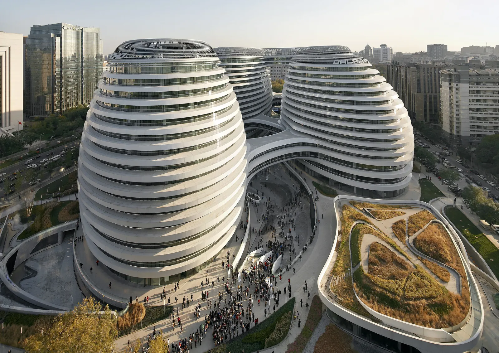
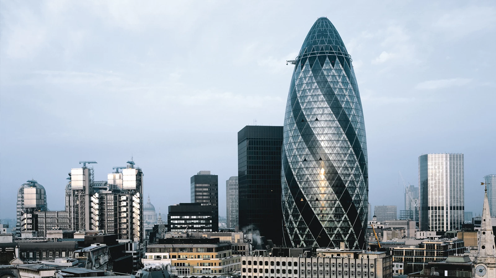
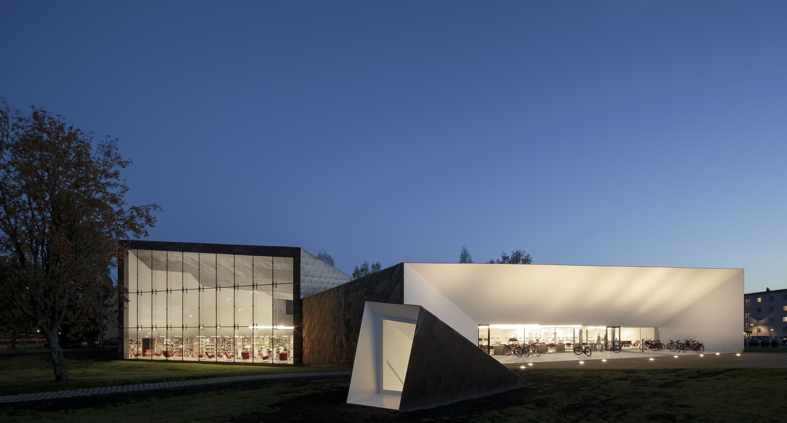

Galaxy Soho en Beijing, China
Jewel Changi Airport, Singapur

Torre 30 St Mary Axe, Londres

Miss Dior en el Museo Roppongi, Tokio
Ummahat 9-3 Hotel, Arabia Saudita
Narsighar House, India
Pan Pacific Orchard Hotel, Singapur

City Library en Seinäjoki, Finlandia
Centro Cultural 'La Seine Musicale', Francia